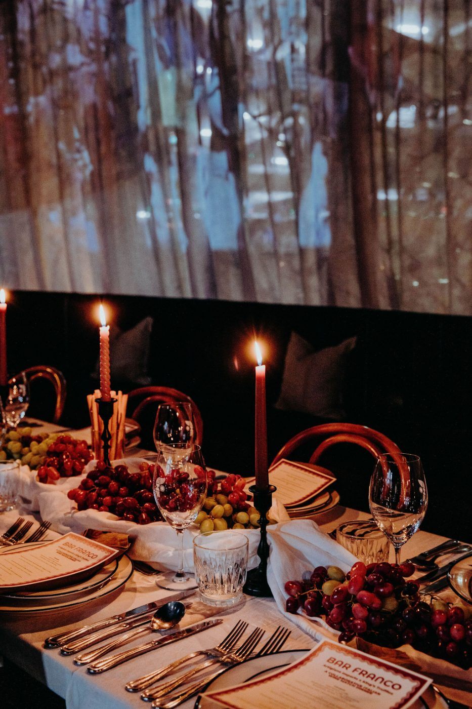
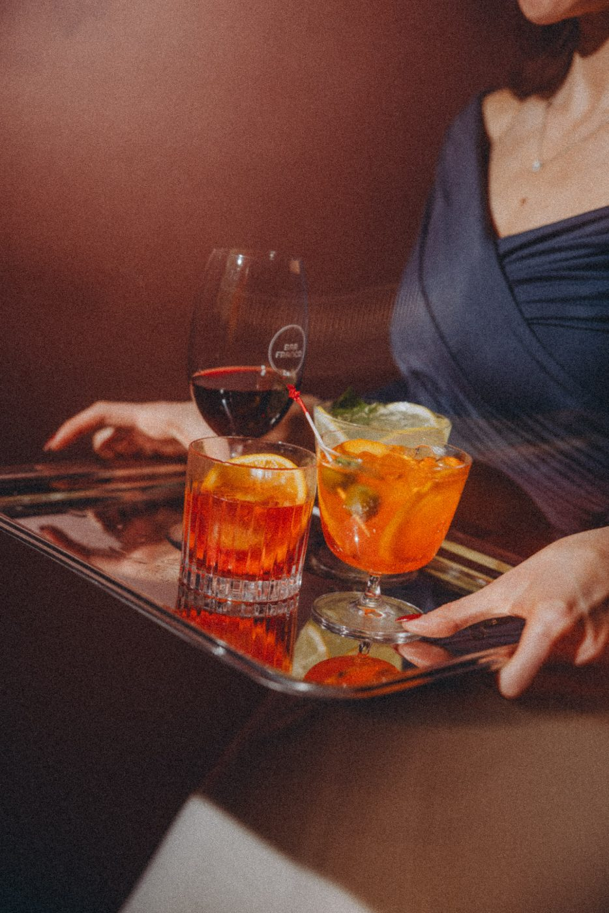
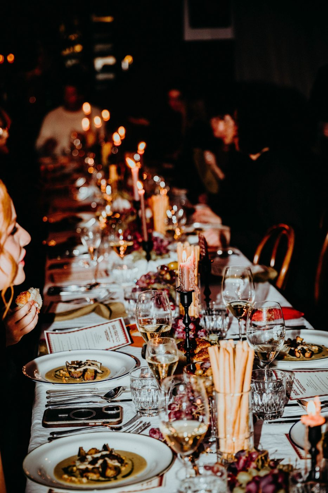

Private events & venue hire
With spaces for private dining, cocktail functions or full venue hire, Bar Franco brings big flavour and even bigger hospitality to every celebration in central Christchurch.
Why Franco
Take over a level or the whole building. Our team handles the food, the drinks and the flow of the night so you can stay in the room with your guests.
From intimate private dining to a 240-strong cocktail party, every Franco function is built around big, generous Italian hospitality.

Occasions
Long-table dinners and free-flowing drinks for the milestones worth marking.
Client dinners, team nights and end-of-year parties with seamless service.
Intimate dinners and full-venue receptions with Italian romance built in.
Stand-up events around the bar — spritzes, Negronis and roving plates.
The spaces

Level 1
A low-lit room built around the bar — ideal for cocktail functions and stand-up celebrations.

Level 2
An open-kitchen dining room made for the long table and seated celebrations of any kind.
Good to know
Up to 240 across both levels — around 165 seated, or the whole venue for a standing cocktail function. Single-level hire is also available.
No venue hire fee. We work to a food and beverage minimum spend instead, tailored to your event, date and space.
Absolutely. Our kitchen handles vegetarian, vegan, gluten-free and most allergies — just let us know when you confirm.
For peak dates (Friday/Saturday nights and December) we recommend enquiring as early as possible. Midweek dates are often available at shorter notice.
Enquire
Tell us the date, the headcount and the vibe — our events team will take it from there.
Prefer to talk? Come say ciao — anamaria@barfranco.nz · 021 083 75416